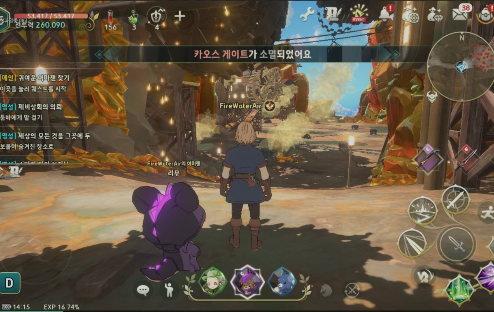
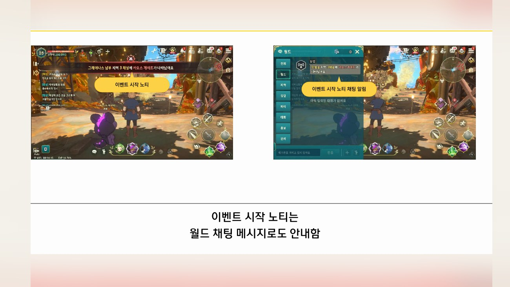
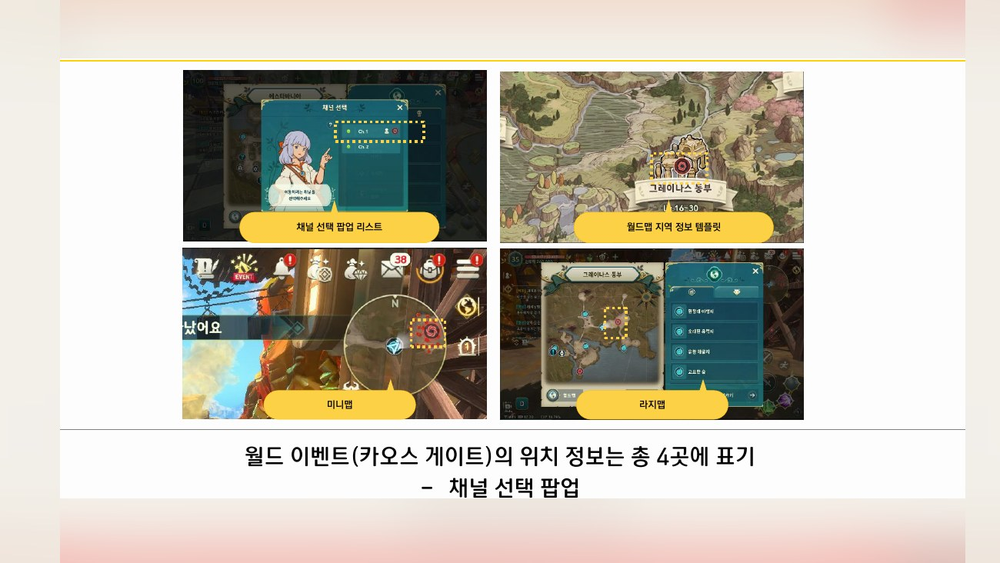
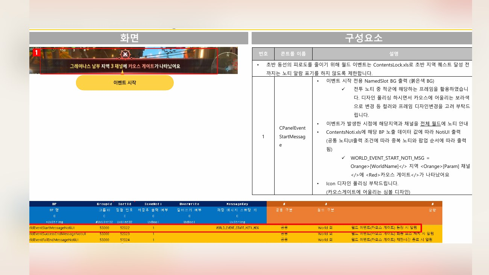
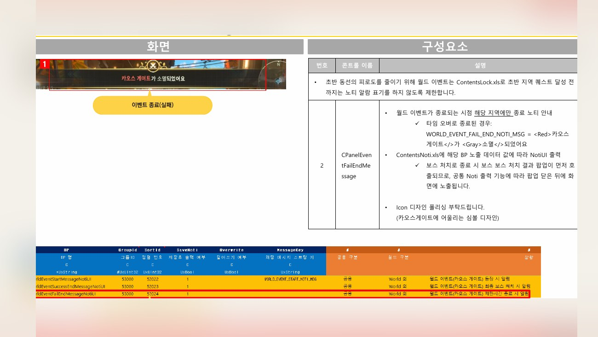
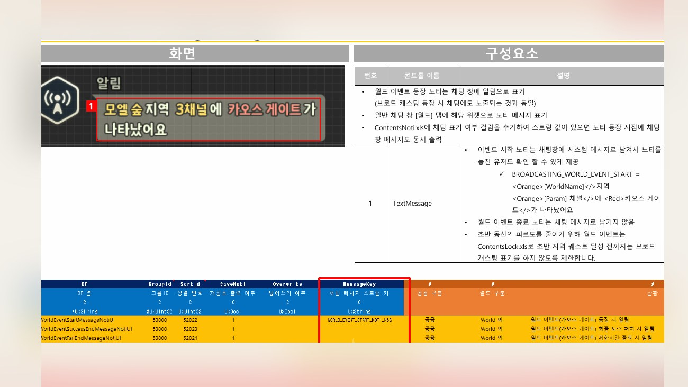
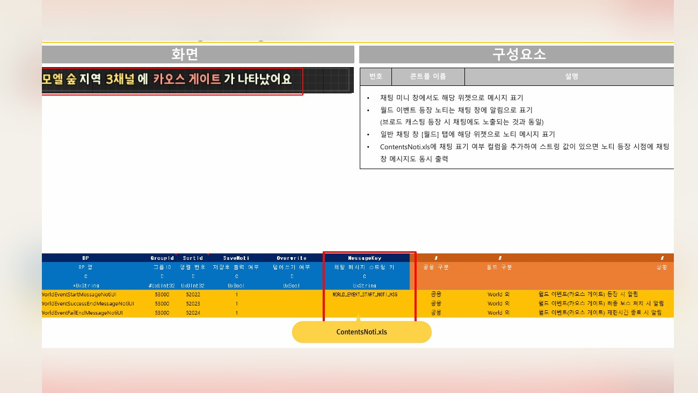

Planning Context
어떤 기획이었나
- 월드 이벤트는 이벤트 규칙, 장소 안내, 채널 선택, 진행 알림, 브로드캐스팅이 서로 이어져야 합니다.
- 인게임 플레이 화면과 아웃게임 확인 UI가 나뉘어 있어 어느 화면에서 무엇을 알려야 할지 기준이 필요했습니다.
ProjectN · World Event
이벤트성 신규 게임 콘텐츠로서 월드맵/노티/채널/브로드캐스팅 등 인게임·아웃게임 접점을 정리한 사례입니다.

Planning Context
Process
Deliverables
Result
이벤트성 콘텐츠의 인게임·아웃게임 정보 전달 지점을 분리하고, 참여 전후 흐름을 문서화했습니다.
Deliverable Captures
원본 문서는 포함하지 않고, 포트폴리오 확인용으로 일부 페이지만 이미지화했습니다. 슬라이드 마스터/상하단 영역은 흐림 처리했습니다.





